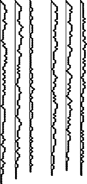
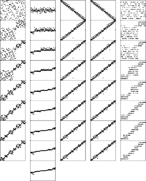

C++ Programming Robert Sedgewick - Princeton University Addison Wesley Professional Algorithms in C++, Parts 1–4: Fundamentals, Data Structure, Sorting, Searching, Third Edition
7.5. Median-of-Three Partitioning
Another improvement to quicksort is to use a partitioning element that is more likely to divide the file near the middle. There are several possibilities here. A safe choice to avoid the worst case is to use a random element from the array for a partitioning element. Then, the worst case will happen with negligibly small probability. This method is a simple example of a probabilistic algorithm—one that uses randomness to achieve good performance with high probability, regardless of the arrangement of the input. We will see numerous examples later in the book of the utility of randomness in algorithm design, particularly when bias in the input is suspected. For quicksort, it may be overkill in practice to put in a full random-number generator just for this purpose: simple arbitrary choices can also be effective.
Another well-known way to find a better partitioning element is to take a sample of three elements from the file, then to use the median of the three for the partitioning element. By choosing the three elements from the left, middle, and right of the array, we can incorporate sentinels into this scheme as well: sort the three elements (using the three-exchange method in Chapter 6), then exchange the one in the middle with a[r-1], and then run the partitioning algorithm on a[l+1], . .., a[r-2]. This improvement is called the median-of-three method.
The median-of-three method helps quicksort in three ways. First, it makes the worst case much more unlikely to occur in any actual sort. For the sort to take N2 time, two out of the three elements examined must be among the largest or among the smallest elements in the file, and this event must happen consistently through most of the partitions. Second, it eliminates the need for a sentinel key for partitioning, because this function is served by one of the three elements that are examined before partitioning. Third, it reduces the total average running time of the algorithm by about 5 percent.
The combination of using the median-of-three method with a cutoff for small subfiles can improve the running time of quicksort over the naive recursive implementation by 20 to 25 percent. Program 7.4 is an implementation that incorporates all these improvements.
We might consider continuing to improve the program by removing recursion, replacing the subroutine calls by inline code, using sentinels, and so forth. However, on modern machines, such procedure calls are normally efficient, and they are not in the inner loop. More important, the use of the cutoff for small subfiles tends to compensate for any extra overhead that may be involved (outside the inner loop). The primary reason to use a nonrecursive implementation with an explicit stack is to be able to provide guarantees on limiting the stack size (see Figure 7.10).
Sorting the smaller subfile first guarantees that the stack size will be logarithmic at worst. Plotted here are the stack sizes for the same files as in Figure 7.5, with the smaller of the subfiles sorted first during the sort (left) and with the median-of-three modification added (right). These diagrams are not indicative of running time; that variable depends on the size of the files on the stack, rather than only their number. For example, the third file (partially sorted) does not require much stack space, but leads to a slow sort because the subfiles being processed are usually large.

Further algorithmic improvements are possible (for example, we could use the median of five or more elements), but the amount of time gained will be marginal for random files. We can realize significant time savings by coding the inner loops (or the whole program) in assembly or machine language. These observations have been validated on numerous occasions by experts with serious sorting applications (see reference section).
For randomly ordered files, the first exchange in Program 7.4 is superfluous. We include it not just because it leads to optimal partitioning for files already in order, but also because it protects against anomalous situations that might occur in practice (see, for example, Exercise 7.33). Figure 7.11 illustrates the effectiveness of involving the middle element in the partitioning decision, for various types of files.
The median-of three modification (particularly, using the middle element of the file) does a good job of making the partitioning process more robust. The degenerate types of files shown in Figure 7.4 are handled particularly well. Another option that achieves this same goal is to use a random partitioning element.

The median-of-three method is a special case of the general idea that we can sample an unknown file and use properties of the sample to estimate properties of the whole file. For quicksort, we want to estimate the median to balance the partitioning. It is the nature of the algorithm that we do not need a particularly good estimate (and may not want one if such an estimate is expensive to compute); we just want to avoid a particularly bad estimate. If we use a random sample of just one element, we get a randomized algorithm that is virtually certain to run quickly, no matter what the input. If we randomly choose three or five elements from the file, then use the median of that sample for partitioning, we get a better partition, but the improvement is offset by the cost of taking the sample.
Program 7.4. Improved quicksort|
Choosing the median of the first, middle, and final elements as the partitioning element and cutting off the recursion for small subfiles can significantly improve the performance of quicksort. This implementation partitions on the median of the first, middle, and final elements in the array (otherwise leaving these elements out of the partitioning process). Files of size 11 or smaller are ignored during partitioning; then, insertion from Chapter 6 is used to finish the sort.
static const int M = 10;
template <class Item>
void quicksort(Item a[], int l, int r)
{
if (r-l <= M) return;
exch(a[(l+r)/2], a[r-1]);
compexch(a[l], a[r-1]);
compexch(a[l], a[r]);
compexch(a[r-1], a[r]);
int i = partition(a, l+1, r-1);
quicksort(a, l, i-1);
quicksort(a, i+1, r);
}
template <class Item>
void hybridsort(Item a[], int l, int r)
{ quicksort(a, l, r); insertion(a, l, r); }
|
Quicksort is widely used because it runs well in a variety of situations. Other methods might be more appropriate for particular cases that might arise, but quicksort handles more types of sorting problems than are handled by many other methods, and it is often significantly faster than alternative approaches. Table 7.1 gives empirical results in support of some of these comments.
Table 7.1. Empirical study of basic quicksort algorithmsQuicksort (Program 7.1) is more than twice as fast as shellsort (Program 6.6) for large randomly ordered files. A cutoff for small subfiles and the median-of-three improvement (Program 7.4) lower the running time by about 10 percent each. | | | | Basic quicksort | Median-of-three quicksort | N | shellsort | M = 0 | M = 10 | M = 20 | M = 0 | M = 10 | M = 20 | 12500 | 6 | 2 | 2 | 2 | 3 | 2 | 3 | 25000 | 10 | 5 | 5 | 5 | 5 | 4 | 6 | 50000 | 26 | 11 | 10 | 10 | 12 | 9 | 14 | 100000 | 58 | 24 | 22 | 22 | 25 | 20 | 28 | 200000 | 126 | 53 | 48 | 50 | 52 | 44 | 54 | 400000 | 278 | 116 | 105 | 110 | 114 | 97 | 118 | 800000 | 616 | 255 | 231 | 241 | 252 | 213 | 258 |
Exercises | 7.28 Our implementation of the median-of-three method is careful to ensure that the sampled elements do not participate in the partitioning process. One reason is that they can serve as sentinels. Give another reason. | | 7.29 Implement a quicksort based on partitioning on the median of a random sample of five elements from the file. Make sure that the elements of the sample do not participate in partitioning (see Exercise 7.28). Compare the performance of your algorithm with the median-of-three method for large random files. | | 7.30 Run your program from Exercise 7.29 on large nonrandom files—for example, sorted files, files in reverse order, or files with all keys equal. How does its performance for these files differ from its performance for random files? | |  7.31 Implement a quicksort based on using a sample of size 2k - 1. First, sort the sample, then, arrange to have the recursive routine partition on the median of the sample and to move the two halves of the rest of the sample to each subfile, such that they can be used in the subfiles, without having to be sorted again. This algorithm is called samplesort. 7.31 Implement a quicksort based on using a sample of size 2k - 1. First, sort the sample, then, arrange to have the recursive routine partition on the median of the sample and to move the two halves of the rest of the sample to each subfile, such that they can be used in the subfiles, without having to be sorted again. This algorithm is called samplesort.
|
| 7.32 Run empirical studies to determine the best value of the sample size in samplesort (see Exercise 7.31), for N = 103, 104, 105, and 106. Does it matter whether quicksort or samplesort is used to sort the sample? | |  7.33 Show that Program 7.4, if changed to omit the first exchange and to scan over keys equal to the partitioning element, runs in quadratic time on a file that is in reverse order. 7.33 Show that Program 7.4, if changed to omit the first exchange and to scan over keys equal to the partitioning element, runs in quadratic time on a file that is in reverse order.
|
|